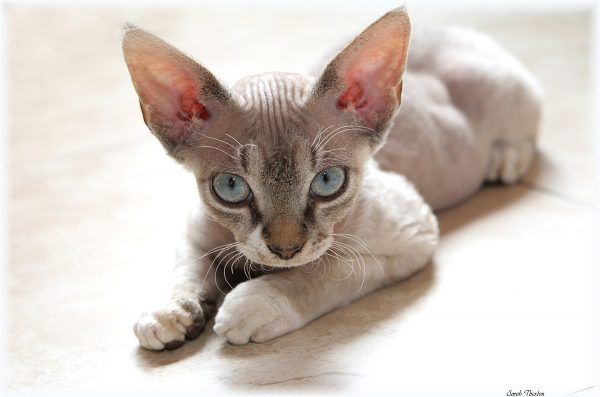
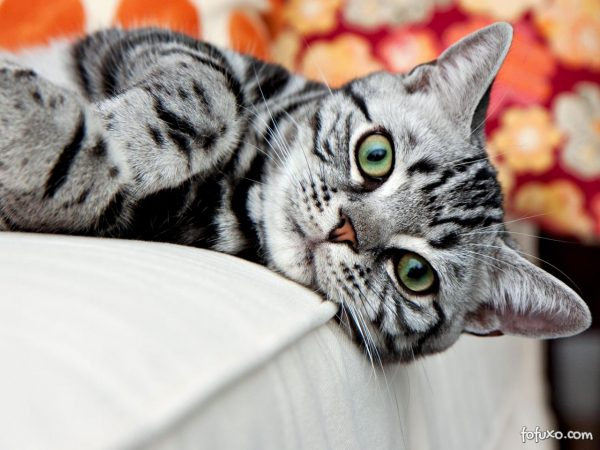
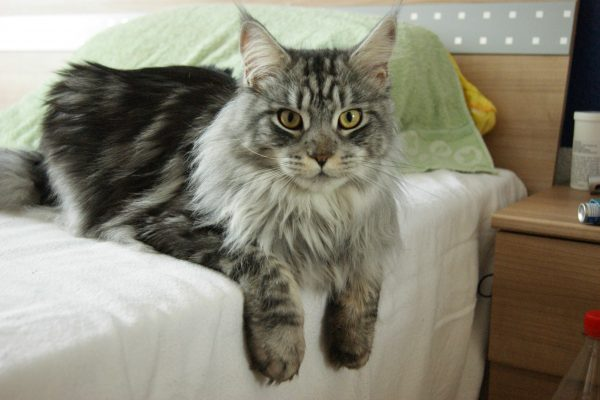
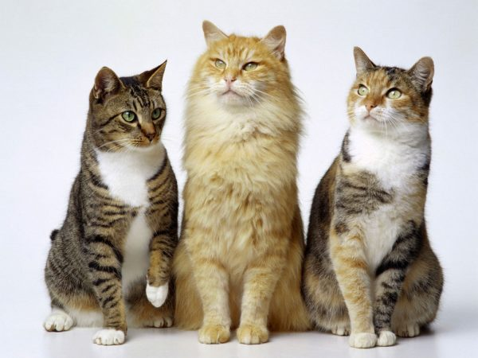

¿Qué raza debo elegir?
Mucho se habla de nuestros amigos peludos, que son muy independientes o que no demuestran mucho cariño. La realidad es que no todos los gatos son iguales y hasta su raza puede influenciar, por lo que hablaremos de las distintas razas que hay
Devon Rex: Este gato requiere de mucha atención, ya que no soporta la soledad, además le gusta compartir con otros gatos. Es afectuoso, juguetón y puede adaptarse a los diferentes estilos de vida.
American Shorthair: Este gato tiene carácter sociable y divertido, amante a los juegos, por lo que necesitará espacios grandes para su esparcimiento y diversión.
Persa: Es un gato muy tranquilo y pacífico, además es una de las razas que más acostumbra a dormir. No posee muchos instintos salvajes, por lo que es perfecto como mascota doméstica.
Maine Coon: El Maine Coon es un gato tranquilo y se adapta fácilmente a los diferentes estilos de vida. Suele ser cariñoso entre la familia, establece relación con solo un miembro del hogar. Es bastante compatible con los niños.
Gato Silvestre / Criollo: Son gatos silvestres, por lo que han desarrollado mucha inteligencia para sobrevivir diariamente. Durante los primeros meses de vida ofrecerán compañía a sus dueños, pero cuando maduren buscarán su propio espacio.
